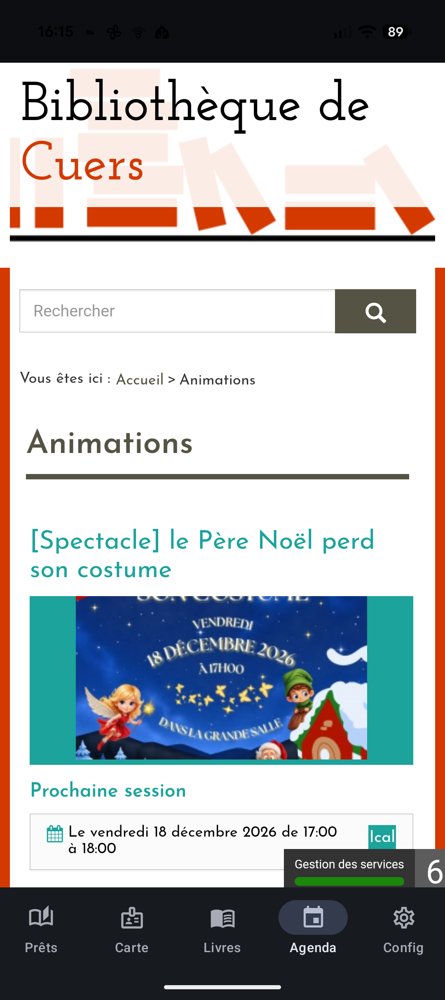

L'actualité de votre bibliothèque, en un geste
Horaires exceptionnels, animations, nouveautés, coups de cœur du mois… le site de la bibliothèque se consulte désormais directement dans l'application, sans ouvrir un navigateur.
En pratique
- L'onglet Agenda affiche la page d'actualités du site de la bibliothèque, rendue telle quelle — exactement comme dans un navigateur.
- Quand votre session est valide, la page vous accueille par votre nom sans avoir à vous reconnecter.
- La page se comporte comme le vrai site : on suit les liens, on navigue, sans jamais quitter l'application.
Les points forts
- L'actualité de la bibliothèque sans chercher l'adresse du site ni télécharger autre chose.
- Le vrai site officiel, affiché tel quel.
- Un seul geste pour rester au courant de ce qui se passe à la médiathèque.
